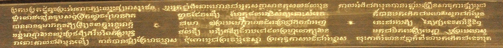
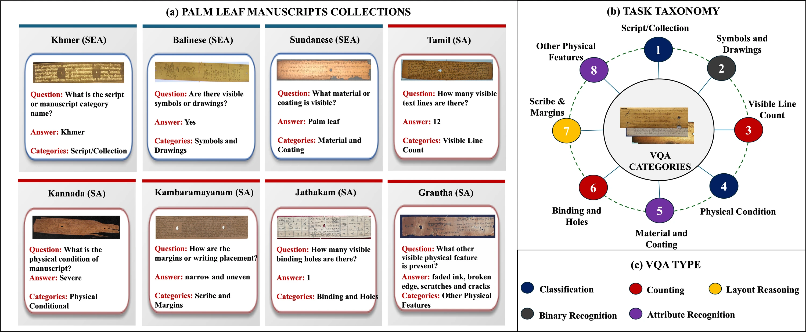

IEEE/CVF WACV 2027 Round 1
PalmLeaf-VQA
A Multi-Script Visual Question Answering Benchmark for Historical Palm-Leaf Manuscript Understanding Across Diverse Regions
Overview
The benchmark at a glance


- Manuscript images
- 923
- Question-answer pairs
- 7,384
- Collection groups
- 8
- Question categories
- 8
- Test images
- 278
- Models in the paper
- 11
Motivation and scope
Abstract
Historical palm-leaf manuscripts challenge vision-language models in ways that modern printed documents do not. Faded writing, irregular layouts, binding holes, and surface damage make it difficult to judge what a manuscript image shows, even when parts of its text are legible.
PalmLeaf-VQA pairs 923 manuscript images from eight South and Southeast Asian collection groups with 7,384 questions and answers. It evaluates observable properties such as line structure, physical condition, and localized features. It does not ask models to transcribe or translate manuscript text.
The study compares open and constrained prompting across proprietary models, open-weight vision-language models, and text-only controls. The best reported exact-match result is 58.00%, highlighting how difficult these visual tasks remain even when the answer format is constrained.
Collections and splits
Dataset
Each image contributes one question per category. The table reports image records in the paper's train, validation, and test splits. Collection names are not necessarily distinct script names.
| Collection | Train | Validation | Test | Total |
|---|---|---|---|---|
| Balinese | 60 | 10 | 30 | 100 |
| Grantha | 42 | 7 | 21 | 70 |
| Jathakam | 59 | 10 | 30 | 99 |
| Kambaramayanam | 48 | 8 | 24 | 80 |
| Kannada | 154 | 26 | 77 | 257 |
| Khmer | 93 | 15 | 47 | 155 |
| Sundanese | 37 | 6 | 18 | 61 |
| Tamil | 60 | 10 | 31 | 101 |
| Total images | 553 | 92 | 278 | 923 |
278 images and 2,224 approved answers. Non-commercial use only.
Task taxonomy
Eight questions, one leaf
The benchmark spans classification, counting, binary recognition, layout reasoning, and attribute recognition. This Khmer folio is from the released test set.

Khmer_0009.jpg- How many visible text lines are there?
- 5
- What is the script or manuscript category name?
- Khmer
- What is the physical condition of the palm-leaf manuscript?
- Medium
- Are there visible symbols or drawings?
- No
- What material or coating is visible?
- Dark coated palm leaf
- How many visible binding holes are there?
- 2
- How are the margins or writing placement?
- Narrow
- What other visible physical feature is present?
- Faded ink, stains, dark background, scratches
Quantitative evaluation
Benchmark results
The paper compares the same questions under open-answer and constrained-answer prompting. Constrained prompts specify an answer format and, where applicable, a vocabulary. New evaluations are listed below the paper results.
| Model | Constrained | Open |
|---|---|---|
| Proprietary vision-language models | ||
| Gemini 3.5 Flash | 58.00 | 43.03 |
| ChatGPT 5.5 | 55.40 | 40.50 |
| Gemini 3.1 Flash Lite | 47.53 | 39.52 |
| Open-weight vision-language models | ||
| InternVL3.5-4B | 46.00 | 24.96 |
| InternVL3.5-8B | 44.96 | 24.78 |
| Qwen3-VL-8B | 44.02 | 21.49 |
| Qwen2.5-VL-3B | 35.21 | 15.15 |
| Qwen2.5-VL-7B | 31.03 | 13.62 |
| Gemma-3-4B-IT | 30.94 | 19.29 |
| Text-only controls | ||
| Llama-3.1-8B | 31.65 | 8.00 |
| Llama-3.2-3B | 26.26 | 7.91 |
| Test set results (New evaluations) | ||
| deepseek4.1-flash | 48.92 | 27.70 |
| qwen3.8-flash-next | 49.91 | 32.37 |
| glm-5.3-flash | 48.02 | 34.44 |
| qwen3.8-27B | 44.38 | 34.76 |
| GPT-6.2 Sol (Max) | 62.37 | 46.27 |
| GPT-6.2 Astra (Max) | 59.22 | 48.04 |
The paper rows are unchanged and have not been rescored on the downloadable annotations. Line count ±1 measures answers within one line of the reference count. A dash means the metric was not reported here.
November 24, 2026: The new evaluations are separate from the paper. The GPT-6.2 Max runs used Codex CLI with the archived prompts and original WACV test labels. Each mode scored all 2,224 answers except Astra open, which scored 2,221 after three script-identification timeouts. The other four models' scores are reported as supplied.
Citation
BibTeX
@misc{thuon2026palmleafvqa,
title={PalmLeaf-VQA: A Multi-Script Visual Question Answering Benchmark for Historical Palm-Leaf Manuscript Understanding Across Diverse Regions},
author={Nimol Thuon and Jun Du and Panhapin Theang},
year={2026},
eprint={2609.31651},
archivePrefix={arXiv},
primaryClass={cs.CV},
url={https://arxiv.org/abs/2609.31651}
}